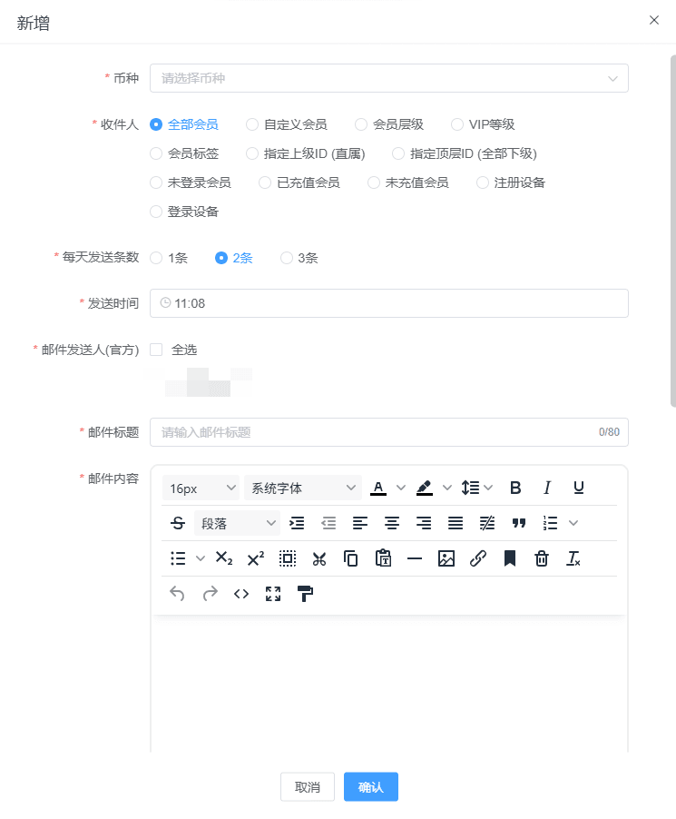
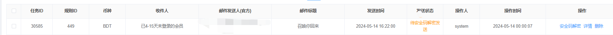
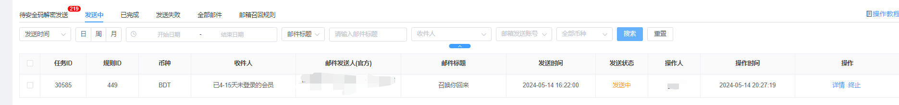
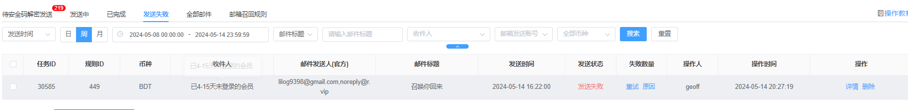

邮箱召回
邮箱召回规则
使用的前置条件，必须配置邮箱验证，不然无法使用，需要注意邮箱召回，会大批量发送邮件，非常容易账号被风控，必须多储备企业账号或者个人账号，请根据运营情况合理使用
当前召回，单次召回最大为100W，超出100W不会进行召回，后续会完善该功能(需要注意，邮箱个人账号单日可以发送500封邮件，企业账号可以发送10000封邮件，所以如果可发数量不够也会召回失败)
新增：
币种：选择一个币种，单选
收件人：

每天发送条数：三选1，分别为：1条，2条，3条
发送时间：站点时间24小时内自定义选择
邮件发送人（官方）：需要自己配置邮箱验证，至少一个，否则无法使用自动召回邮箱召回功能
邮件标题：自定义
邮件内容：自定义
自动召回开关：开启后会根据配置自动发送邮件，会消耗大量邮件。

待安全码解密发送
当新增邮箱召回规则成功，新增数据状态会变为：待安全码解密，必须人工主动操作安全码解密才会按照设置的发送时间发送，如果没解密不会按时发送的，如下图：

需要安全码才可以解密，如下图

发送中
解密成功状态变更为：发送中，等到达发送时间会自动发送，没到发送时间的时候状态会一直显示发送中

根据邮箱召回规则设置的发送时间会自动发送（需要手动操作解密），成功状态会变为已完成，失败会变成发送失败
发送失败，可以查看，原因，根据原因检查配置，修改后，在尝试
